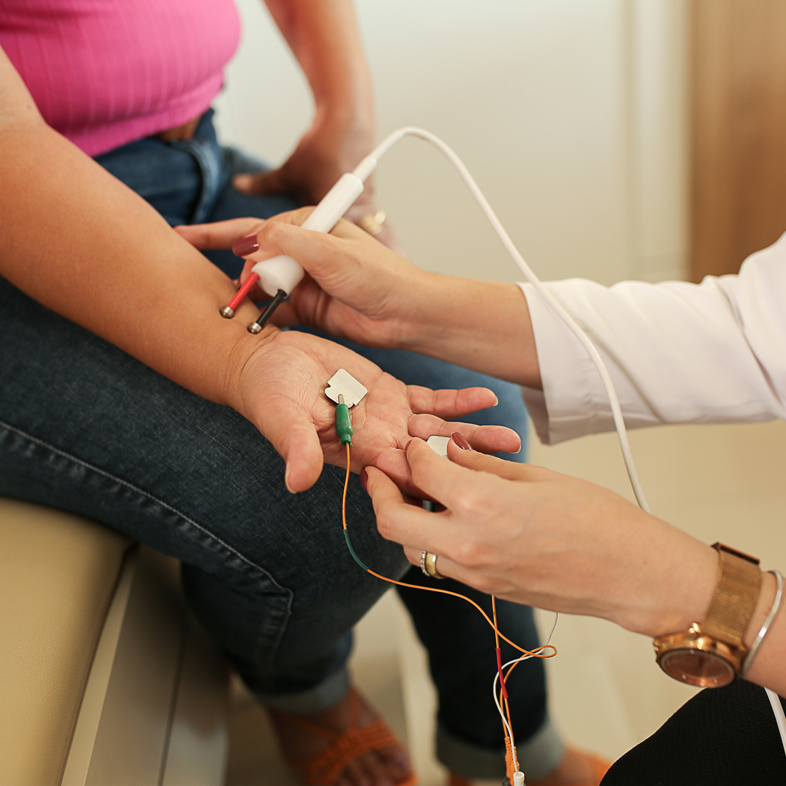

SOBRE MIM
Dra. Érica Guimarães Castro
Neurologista e Neurofisiologista CRM MG 71590 - RQE 47504 | RQE 55971FORMAÇÃO
• Graduada em Medicina pela Universidade Estadual de Montes Claros (UNIMONTES);
• Graduação no exterior em Paramedic Science pela University of the West of England- Bristol, Reino Unido;
• Residência Médica em Neurologia pelo Hospital Governador Israel Pinheiro/ IPSEMG – Belo Horizonte/MG;
• Especialização em Neurofisiologia com ênfase em Eletroneuromiografia – Centro de Neurofisiologia Roldão Coelho – Belo Horizonte/MG;
• Membro Titular da Sociedade Brasileira de Neurofisiologia Clínica- SBNC;
• Membro efetivo da Academia Brasileira de Neurologia- ABN.
ATUAÇÃO PROFISSIONAL
• Médica assistente do Hospital Santa Casa de Montes Claros;;
• Precetora da residência de Neurocirurgia do Hospital Santa Casa de Montes Claros;
• Realiza exames de ELETRONEUROMIOGRAFIA dos membros superiores e inferiores, face, estimulação repetitiva, estudo do tremor.
ÁREAS DE ATUAÇÃO
Doenças Neuromusculares
As doenças neuromusculares são doenças que afetam a função muscular ou dos nervos, causando fraqueza, atrofia, dormência, desequilíbrio. Doenças do neurônio motor, como a Esclerose Lateral Amiotrófica, Radiculopatias, Plexopatias, Ganglionopatias, Neuropatias periféricas, Miastenia gravis e Miopatias são algumas dessas doenças.
Doenças Neurogenéticas
Quando falamos em Doenças Neurogenéticas falamos em DOENÇAS RARAS. São doenças neurológicas causadas por mutações no DNA e se apresentam com sintomas diversos, como fraqueza muscular, desequilíbrio, dormência nas mãos, movimento anormal ou convulsões. Podem ter início em qualquer idade e seu diagnóstico em geral necessita de TESTES GENÉTICOS, realizados em consulta médica.
Doenças Neurovasculares (AVC)
As Doenças Neurovasculares são aquelas que em geral acontecem de forma súbita. A pessoa apresenta perda repentina do movimento de um lado do corpo, alteração da fala, desequilíbrio, tontura ou dor de cabeça. As principais doenças cerebrovasculares são Acidente Vascular Cerebral (isquêmico ou hemorrágico), Trombose Venosa Cerebral, Hemorragia Subaracnoidea, Má formações arteriovenosas, Doenças ateroscleróticas, Dissecções arteriais, Vasculites (inflamação dos vasos).
Cefaléia
Dor de cabeça pode ser resultado do cansaço do dia-a-dia como a cefaleia TENSIONAL, ser incapacitante como a ENXAQUECA ou até mesmo apresentar algum sinal de alarme para uma doença grave, como as CEFALEIAS SECUNDÁRIAS. A investigação diagnóstica correta, garante o tratamento correto e a melhora da qualidade de vida de quem sofre com esses sintomas.
Neuropediatria
A neurologia infantil acompanha o desenvolvimento neurológico da criança e adolescente, avaliando seu comportamento, desenvolvimento de habilidades e aquisições cognitivas e de linguagem ao longo do tempo. É possível diagnosticar doenças como autismo, TDAH, TOD, erros inatos do metabolismo, hipotonias, deficiência intelectual.
Distúrbios do Sono e do Movimento
Os distúrbios do movimento são um grupo de problemas neurológicos caracterizados por movimentos involuntários que podem ocorrer de maneira contínua ou episódica. Já os distúrbios do sono mais comuns são a insônia, a apnéia obstrutiva do sono e a síndrome das pernas inquietas. São comuns também o sono insuficiente e o atraso de fase de sono.
Convulsões e Epilepsia
A Epilepsia se manifesta por crises de perda da consciência, acompanhadas de abalos, perda de urina e mordededura de língua. Além dessas crises clássicas, podem acontecer crises de perda de tônus muscular, espasmos, ausências, desvio dos olhos. A Epilepsia pode acontecer por alteração genética ou estrutural e deve ser sempre investigada.
Dor Neuropática e Dor Crônica
A dor neuropática é um tipo de dor crônica que ocorre quando os nervos sensitivos do Sistema Nervoso Central e/ou periférico são feridos ou danificados. Esse tipo de problema está presente em até 10% da população e pode ser incapacitante, causando diferentes sensações de dor.
AGENDAMENTO 24h
Faça o agendamento da sua consulta em qualquer horário do dia:
• Neurologista em Montes Claros;
• Eletroneuromiografia em Montes Claros.
ELETRONEUROMIOGRAFIA
Para que serve a Eletroneuromiografia?
O estudo eletroneuromiográfico tem um papel essencial para o diagnóstico das doenças que afetam o sistema neuromuscular.
Nós nos utilizamos da capacidade que o nervo e o músculo têm de gerar potenciais de ação elétricos fisiológicos para avaliar a função do sistema nervoso periférico.

DEPOIMENTOS
"Profissional de competência admirável, diferenciada. Gostei muito do seu atendimento, muito atenciosa e dedicada. Finalmente um médico que te olha nos olhos e te trata como um ser humano. Além do fator profisional, o consultório tem uma ótima localização, com alguma facilidade para conseguir estacionar."
 ANDRÉ
Google
ANDRÉ
Google
"Excelente o atendimento da Dra Erica, de uma simpatia e atenção enormes,esclarecendo tudo com muita competência!! Gratidão!! "
TELMA GUEDES
Google
"A Dra. Érica é, sem dúvidas, a melhor neurologista de Minas Gerais. Parabéns pela dedicação e excelência no atendimento! Sou paciente dela, e graças à sua competência minha qualidade de vida melhorou consideravelmente. Super recomendo👍"
GISELE SAMPAIO
Google
"Não conhecia a Dra. Érica, mas fiquei encantada com a consulta. Há muito tempo não era atendida com tanto profissionalismo, cuidado e respeito, inclusive por parte da recepcionista. Excelente médica em Montes Claros, que parece exercer sua profissão com verdadeiro desejo de ajudar as pessoas."
ALDECI ALVES DE SOUZA
Google
"Ótima médica, super atenciosa, explicou cada procedimento e o resultado, com clareza e tranquilidade! Amei a postura e profissionalismo de Dra. Érica. A secretária dela também é super dinâmica, acolhedora e proativa, gostei demais, me senti super bem recebida e atendida pela equipe toda!!"
MARIA FERNANDA
Google
"Excelente profissional! Super inteligente, capacitada, educada, dedicada. Sempre disposta a cuidar e dar o melhor tratamento ao seus pacientes."
MAÍRA DIAS
Google
"Profissional altamente qualificada, competente e atenciosa. Ótima localização, atendimento humanizado e diagnóstico preciso! Uma das melhores neurologistas da região. Recomendo a todos!"
HUGO SAMPAIO LIBERO
Google
"Excelente médica, muito humana e assertiva nas condutas clínicas"
CAMILA FIGUEIREDO
Google
"Atendimento impecável! Melhor neurologista da cidade. Muito educada e humana"
CAROLINE MAIA
Google